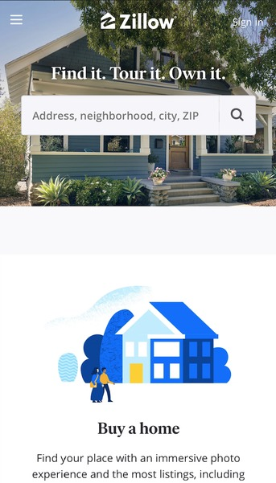
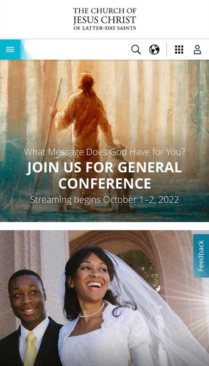

Lily Huang
White Space and Clean Design
BYU-Idaho
https://www.byui.edu/In the navigation bar on the top, the web designer leaves space between the school and the search logo. This makes the header looks simple and organized, the user can select the icon according to their needs. Below the navigation bar, there is a heading that indicates the name of the school. It does not contain other stuff which makes the title big and clear. The pictures are centered and have white space around them. The space is the same amount away from the broader and another object.
Contrast
Zillow Real Estate
https://www.zillow.com/ The first picture is of a big house with a lot of home decor plants. It seems like a rich energy background. Compare to the secound picture below the first one. It has a simple drawing picture and the white space is more than the first one. This shows the contrast element on the website.
Repetition
The Church of Jesus Christ of Latter-day Saints
https://www.churchofjesuschrist.org/?lang=eng In the content part of the website, the developer use the same layout through out the home page. There are same front on the pictures or under the pictures. The white space is even size between each section.